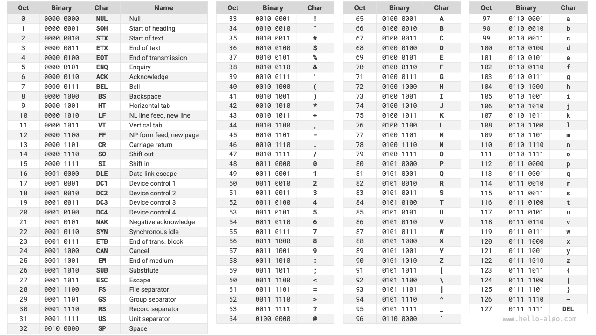

بنى البيانات
ترميز المحارف *
في الحواسيب، تُخزَّن جميع البيانات بصيغة ثنائية، والمحرف char ليس استثناءً. ولتمثيل المحارف، نحتاج إلى إنشاء "مجموعة محارف" تعرّف تقابلاً واحداً لواحد بين كل محرف والأعداد الثنائية. وبوجود مجموعة المحارف، تستطيع الحواسيب تحويل الأعداد الثنائية إلى محارف عبر البحث في الجدول.
مجموعة محارف ASCII
شيفرة ASCII هي أقدم مجموعة محارف، واسمها الكامل الشيفرة الأمريكية القياسية لتبادل المعلومات. وتستخدم 7 بتات ثنائية (البتات السبع الدنيا من بايت واحد) لتمثيل محرف واحد، ويمكنها تمثيل 128 محرفاً مختلفاً كحد أقصى. وكما يظهر في الشكل التالي، تضم شيفرة ASCII الحروف الإنجليزية الكبيرة والصغيرة، والأرقام من 0 إلى 9، وبعض علامات الترقيم، وبعض المحارف التحكمية (مثل سطر جديد وفاصلة جدولة).

غير أن شيفرة ASCII قادرة على تمثيل الإنجليزية فقط. ومع عولمة الحواسيب، ظهرت مجموعة محارف تُسمى EASCII قادرة على تمثيل مزيد من اللغات. وهي تتوسع من أساس 7 بتات في ASCII إلى 8 بتات، ويمكنها تمثيل 256 محرفاً مختلفاً.
وعلى مستوى العالم، ظهرت تباعاً دفعة من مجموعات محارف EASCII الملائمة لمناطق مختلفة. والمحارف الـ128 الأولى في هذه المجموعات موحّدة كشيفرة ASCII، أما المحارف الـ128 الأخيرة فتُعرَّف بشكل مختلف لتلائم احتياجات اللغات المختلفة.
مجموعة محارف GBK
لاحقاً، اكتشف الناس أن EASCII لا تزال غير قادرة على توفير محارف كافية لكثير من اللغات. فعلى سبيل المثال، هناك ما يقارب مئة ألف محرف صيني، ويُستخدم منها عدة آلاف في الحياة اليومية. وفي عام 1980، أصدرت إدارة التقييس الوطنية الصينية مجموعة محارف GB2312، التي ضمت 6,763 محرفاً صينياً، ولبّت أساساً احتياجات المعالجة الحاسوبية للغة الصينية.
غير أن GB2312 لا تستطيع معالجة بعض المحارف النادرة والمحارف الصينية التقليدية. ومجموعة محارف GBK امتداد مبني على GB2312، وتضم ما مجموعه 21,886 محرفاً صينياً. وفي مخطط ترميز GBK، تُمثَّل محارف ASCII ببايت واحد، وتُمثَّل المحارف الصينية ببايتين.
مجموعة محارف Unicode
مع التطور النشط لتقنية الحواسيب، ازدهرت مجموعات المحارف ومعايير الترميز، وهو ما جلب مشكلات عديدة. فمن ناحية، لا تعرّف هذه المجموعات عموماً سوى محارف لغات محددة، ولا يمكنها العمل بشكل طبيعي في بيئات متعددة اللغات. ومن ناحية أخرى، توجد معايير متعددة لمجموعات المحارف للغة نفسها، وإذا استخدم حاسوبان معيارين مختلفين للترميز، فستظهر محارف مشوّهة أثناء نقل المعلومات.
وفكّر باحثو ذلك العصر: لو صدرت مجموعة محارف كاملة بما يكفي لتضم جميع لغات العالم ورموزه، أفلا يحل ذلك مشكلات البيئات متعددة اللغات ويقضي على النصوص المشوّهة؟ وبدافع هذه الفكرة، وُلدت Unicode، وهي مجموعة محارف كبيرة وشاملة.
Unicode، أو الشيفرة الموحّدة، يمكنها نظرياً استيعاب أكثر من مليون محرف. وهي تسعى إلى ضم محارف العالم كافة في مجموعة محارف موحّدة، وتوفير مجموعة محارف عالمية للتعامل مع نصوص اللغات المختلفة وعرضها، وتقليل مشكلات المحارف المشوّهة الناتجة عن اختلاف معايير الترميز. ومنذ إصدارها عام 1991، توسّعت Unicode باستمرار لتضم لغات ومحارف جديدة. وحتى سبتمبر 2022، ضمت Unicode 149,186 محرفاً، تشمل محارف من لغات مختلفة ورموزاً وحتى رموزاً تعبيرية.
بصفتها مجموعة محارف عالمية، تخصّص Unicode في جوهرها لكل محرف "نقطة شيفرة" (معرّف محرف) فريدة، يتراوح نطاقها من U+0000 إلى U+10FFFF، مشكّلةً فضاءً موحّداً لترقيم المحارف. غير أن Unicode لا تحدد كيفية تخزين نقاط شيفرة المحارف هذه في الحواسيب. ولا يسعنا إلا أن نسأل: عندما تظهر نقاط شيفرة Unicode بأطوال متعددة في نص واحد، كيف يحلّل النظام المحارف؟ على سبيل المثال، بمعطى ترميز طوله بايتان، كيف يحدد النظام ما إذا كان محرفاً واحداً من بايتين أم محرفين من بايت واحد لكل منهما؟
للمشكلة أعلاه، يتمثل أحد الحلول المباشرة في تخزين جميع المحارف بترميز متساوي الطول. وكما يظهر في الشكل التالي، يشغل كل محرف في "Hello" بايتاً واحداً، ويشغل كل محرف في "算法" (خوارزمية) بايتين. ويمكننا ترميز جميع محارف "Hello 算法" بطول بايتين عبر حشو البتات العليا بالأصفار. وبهذه الطريقة، يستطيع النظام تحليل محرف واحد كل بايتين واستعادة محتوى هذه العبارة.

غير أن شيفرة ASCII أثبتت لنا بالفعل أن ترميز الإنجليزية يحتاج إلى بايت واحد فقط. وإذا اعتمدنا المخطط أعلاه، فسيكون حجم النص الإنجليزي ضعف حجمه في ترميز ASCII، وهو تبذير كبير لمساحة الذاكرة. لذلك، نحتاج إلى طريقة ترميز Unicode أكثر كفاءة.
ترميز UTF-8
حالياً، أصبح UTF-8 طريقة ترميز Unicode الأكثر استخداماً على المستوى الدولي. وهو ترميز متغير الطول يستخدم من 1 إلى 4 بايتات لتمثيل محرف واحد، حسب تعقيد المحرف. فمحارف ASCII تحتاج إلى بايت واحد فقط، والحروف اللاتينية واليونانية تحتاج إلى بايتين، والمحارف الصينية الشائعة تحتاج إلى 3 بايتات، وبعض المحارف النادرة الأخرى تحتاج إلى 4 بايتات.
قواعد ترميز UTF-8 ليست معقدة، ويمكن تقسيمها إلى الحالتين التاليتين.
- بالنسبة للمحارف ذات البايت الواحد، اضبط البت الأعلى على $0$، واضبط البتات السبع المتبقية على نقطة شيفرة Unicode. ومن الجدير بالذكر أن محارف ASCII تشغل نقاط الشيفرة الـ128 الأولى في مجموعة محارف Unicode. أي أن ترميز UTF-8 متوافق رجعياً مع شيفرة ASCII. وهذا يعني أننا نستطيع استخدام UTF-8 لتحليل نصوص شيفرة ASCII القديمة جداً.
- بالنسبة للمحارف ذات الطول $n$ من البايتات (حيث $n > 1$)، اضبط أعلى $n$ بتة في البايت الأول على $1$، واضبط البتة $(n + 1)$ على $0$؛ وبدءاً من البايت الثاني، اضبط أعلى بتتين في كل بايت على $10$؛ واستخدم جميع البتات المتبقية لملء نقطة شيفرة Unicode الخاصة بالمحرف.
يظهر الشكل التالي ترميز UTF-8 المقابل لـ "Hello 算法". ويمكن ملاحظة أنه بما أن أعلى $n$ بتة مضبوطة كلها على $1$، يستطيع النظام تحديد أن طول المحرف هو $n$ عبر عدّ بتات $1$ البادئة.
لكن لماذا نضبط أعلى بتتين في جميع البايتات الأخرى على $10$؟ في الواقع، يمكن أن يخدم هذا $10$ كرمز تحقق. وبافتراض أن النظام يبدأ تحليل النص من بايت غير صحيح، فإن $10$ في بداية البايت يمكن أن يساعد النظام على اكتشاف الشذوذ بسرعة.
سبب استخدام $10$ كرمز تحقق هو أنه وفق قواعد ترميز UTF-8، يستحيل أن تكون أعلى بتتين في أي محرف $10$. ويمكن إثبات هذا الاستنتاج بالتناقض: بافتراض أن أعلى بتتين في محرف ما هما $10$، فهذا يعني أن طول المحرف $1$، أي أنه يقابل شيفرة ASCII. غير أن البت الأعلى في شيفرة ASCII يجب أن يكون $0$، وهو ما يناقض الافتراض.

إضافة إلى UTF-8، تشمل طرق الترميز الشائعة الطريقتين التاليتين.
- ترميز UTF-16: يستخدم بايتين أو 4 بايتات لتمثيل محرف واحد. وتُمثَّل جميع محارف ASCII والمحارف غير الإنجليزية الشائعة ببايتين؛ وقليل من المحارف يحتاج إلى 4 بايتات. وبالنسبة للمحارف ذات البايتين، يساوي ترميز UTF-16 نقطة شيفرة Unicode.
- ترميز UTF-32: يستخدم كل محرف 4 بايتات. وهذا يعني أن UTF-32 يشغل مساحة أكبر من UTF-8 وUTF-16، خصوصاً للنصوص التي ترتفع فيها نسبة محارف ASCII.
من منظور شغل مساحة التخزين، يكون استخدام UTF-8 لتمثيل المحارف الإنجليزية فعالاً جداً لأنه يحتاج إلى بايت واحد فقط؛ أما استخدام ترميز UTF-16 لبعض المحارف غير الإنجليزية (مثل الصينية) فيكون أكثر كفاءة لأنه يحتاج إلى بايتين فقط، بينما قد يحتاج UTF-8 إلى 3 بايتات.
من منظور التوافق، يتمتع UTF-8 بأفضل عالمية، وتدعم كثير من الأدوات والمكتبات UTF-8 أولاً.
ترميز المحارف في لغات البرمجة
بالنسبة لكثير من لغات البرمجة في الماضي، كانت السلاسل النصية أثناء تنفيذ البرنامج تستخدم ترميزات داخلية مثل UTF-16 أو UTF-32. وفي ظل هذه التمثيلات، يمكننا غالباً معالجة السلاسل النصية كما نعالج المصفوفات، ولهذه المقاربة المزايا التالية.
- الوصول العشوائي: يمكن الوصول إلى السلاسل النصية المرمزة بـ UTF-16 عشوائياً بسهولة. أما UTF-8 فهو ترميز متغير الطول. وللعثور على المحرف رقم $i$، نحتاج إلى الاجتياز من بداية السلسلة حتى المحرف رقم $i$، وهو ما يستغرق زمن $O(n)$.
- عدّ المحارف: على غرار الوصول العشوائي، فإن حساب طول سلسلة مرمزة بـ UTF-16 عملية $O(1)$ أيضاً. غير أن حساب طول سلسلة مرمزة بـ UTF-8 يتطلب اجتياز السلسلة كاملة.
- عمليات السلاسل النصية: تنفيذ كثير من عمليات السلاسل النصية (مثل التقسيم والدمج والإدراج والحذف وغيرها) على السلاسل المرمزة بـ UTF-16 أسهل. أما تنفيذ هذه العمليات على السلاسل المرمزة بـ UTF-8 فيتطلب عادةً حسابات إضافية لضمان عدم توليد ترميز UTF-8 غير صالح.
في الواقع، تصميم مخططات ترميز المحارف للغات البرمجة موضوع مثير للاهتمام جداً يتضمن عوامل عديدة.
- يستخدم النوع
Stringفي Java ترميز UTF-16، بحيث يشغل كل محرف بايتين. ويعود ذلك إلى أنه في بداية تصميم لغة Java، اعتقد الناس أن 16 بتة كافية لتمثيل جميع المحارف الممكنة. غير أن هذا كان حكماً خاطئاً. لاحقاً، توسّعت مواصفة Unicode إلى ما يتجاوز 16 بتة، لذا قد تُمثَّل المحارف في Java الآن بزوج من القيم ذات 16 بتة (يسمى "الأزواج البديلة"). - تستخدم سلاسل JavaScript وTypeScript النصية ترميز UTF-16 لأسباب مشابهة لأسباب Java. فعندما قدّمت Netscape لغة JavaScript لأول مرة في عام 1995، كانت Unicode لا تزال في مراحلها التطورية المبكرة، وكان استخدام ترميز 16 بتة كافياً حينها لتمثيل جميع محارف Unicode.
- تستخدم C# ترميز UTF-16 أساساً لأن منصة .NET صممتها Microsoft، وكثير من تقنيات Microsoft (بما فيها نظام تشغيل Windows) تستخدم ترميز UTF-16 على نطاق واسع.
ونظراً لتقليل تلك اللغات من تقدير أعداد المحارف، اضطرت إلى اعتماد طريقة "الأزواج البديلة" لتمثيل محارف Unicode التي يتجاوز طولها 16 بتة. وهذا حل وسط مضطر إليه. فمن ناحية، في السلاسل التي تحتوي على أزواج بديلة، قد يشغل المحرف الواحد بايتين أو 4 بايتات، فيفقد الترميز ميزة ثبات الطول. ومن ناحية أخرى، يتطلب التعامل مع الأزواج البديلة شيفرة إضافية، مما يزيد التعقيد وصعوبة التنقيح في البرمجة.
للأسباب المذكورة أعلاه، اقترحت بعض لغات البرمجة مخططات ترميز مختلفة.
- يستخدم النوع
strفي Python ترميز Unicode، ويعتمد تمثيلاً مرناً للسلاسل النصية يعتمد فيه طول المحارف المخزنة على أكبر نقطة شيفرة Unicode في السلسلة. فإذا كانت جميع المحارف في السلسلة من محارف ASCII، شغل كل محرف بايتاً واحداً؛ وإذا وُجدت محارف تتجاوز نطاق ASCII لكنها كلها ضمن المستوى الأساسي متعدد اللغات (BMP)، شغل كل محرف بايتين؛ وإذا وُجدت محارف تتجاوز BMP، شغل كل محرف 4 بايتات. - يستخدم النوع
stringفي لغة Go ترميز UTF-8 داخلياً. وتوفر لغة Go أيضاً النوعrune، الذي يُستخدم لتمثيل نقطة شيفرة Unicode واحدة. - يستخدم النوعان
strوStringفي لغة Rust ترميز UTF-8 داخلياً. وتوفر Rust أيضاً النوعcharلتمثيل نقطة شيفرة Unicode واحدة.
يجدر التنبيه إلى أن النقاش أعلاه يتعلق بكيفية تخزين السلاسل النصية في لغات البرمجة، وهو يختلف عن كيفية تخزين السلاسل النصية في الملفات أو نقلها عبر الشبكات. ففي تخزين الملفات أو النقل عبر الشبكات، نرمّز السلاسل النصية عادةً بصيغة UTF-8 لتحقيق أفضل توافق وكفاءة في المساحة.